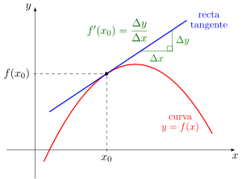
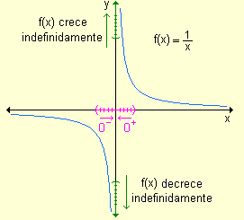
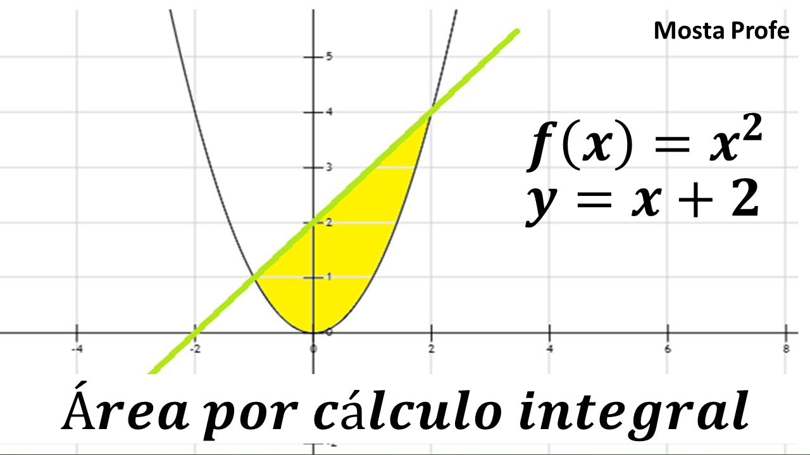

El cálculo es una rama fundamental de las matemáticas que estudia el cambio y el movimiento a través de conceptos como límites, derivadas e integrales. Su conocimiento es esencial para la ingeniería en sistemas, pues permite modelar fenómenos, optimizar procesos y analizar comportamientos dinámicos en sistemas computacionales.
La derivada mide la tasa de cambio instantánea de una función, siendo útil para entender cómo varían las variables en el tiempo o en función de otras variables. Por otro lado, la integral se emplea para calcular áreas bajo curvas, acumulación de cantidades y resolver problemas de acumulación y distribución.
Otro concepto clave es el límite, que define el valor al que se acerca una función cuando la variable independiente se aproxima a cierto punto, siendo la base para la definición rigurosa de derivadas e integrales. También se estudian series y sucesiones que permiten aproximar funciones complejas mediante sumas finitas o infinitas.
El cálculo diferencial e integral tiene múltiples aplicaciones en la ingeniería, incluyendo análisis de algoritmos, gráficos de funciones, simulaciones y optimización de sistemas. Su dominio es una herramienta indispensable para resolver problemas técnicos y científicos.
| Función | Derivada |
|---|---|
| f(x) = xⁿ | f'(x) = n·xⁿ⁻¹ |
| f(x) = sin(x) | f'(x) = cos(x) |
| f(x) = cos(x) | f'(x) = -sin(x) |
| f(x) = eˣ | f'(x) = eˣ |